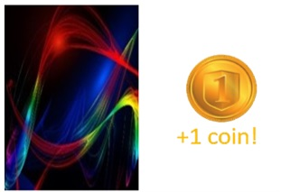

<!DOCTYPE html>
<html>

<head>
    <title>Cards</title>
    <script src='js/jquery-2.1.1.min.js'></script>
    <script src="jspsych/jspsych.js"></script>
    <script src="jspsych/plugin-resize.js"></script>
    <script src="jspsych/plugin-html-keyboard-response.js"></script>
    <script src="jspsych/plugin-instructions.js"></script>
    <script src="jspsych/plugin-preload.js"></script>
    <script src="jspsych/plugin-survey-text.js"></script>
    <script src="jspsych/plugin-survey-multi-choice.js"></script>
    <script src="jspsych/plugin-fullscreen.js"></script>
    <script src="jspsych/plugin-html-button-response.js"></script>
    <script src="jspsych/plugin-html-slider-response.js"></script>
    <link href="css/my_exp.css" rel="stylesheet" type="text/css">
    <link href="css/jspsych.css" rel="stylesheet" type="text/css">

</head>

<body>

    <script>


        var jsPsych = initJsPsych({
            on_finish: function () {
                /*calculate bonus */
                var number_of_reward1 = jsPsych.data.get().filter({ phase: 'exp', trial_name: 'reward1' }).select('reward').sum()
                var number_of_reward2 = jsPsych.data.get().filter({ phase: 'exp', trial_name: 'reward2' }).select('reward').sum()
                var bonus = 0.003 * (number_of_reward1 + number_of_reward2)
                var bonus_string = bonus.toFixed(2)
                localStorage.bonus = bonus_string; //bonus to show
                /*get data */
                processed_data = jsPsych.data.get().json()
                download_csv(jsPsych.data.get().csv())
                $.ajax({
                    type: 'POST',
                    url: '/save',
                    data: { 'data': processed_data },
                    success: function () {
                        console.log('success');
                        document.location = '/next'
                    },
                    // Endpoint not running, local save
                    error: function (err) {
                        console.log(err)
                    }
                });
            }
        });

        /*this defines the css properties according to the window_screen_size*/
        var root = document.documentElement;
        var vis_angle_px = 105
        var square_width = 51.4

        //---------------------------------------------------------------------------------------------
        root.style.setProperty('--left_card', window.screen.width / 2 - 2 * vis_angle_px + "px");
        root.style.setProperty('--right_card', window.screen.width / 2 - 2 * vis_angle_px + "px");
        root.style.setProperty('--top_card', window.screen.height / 2 - 90 + "px");
        root.style.setProperty('--top_reward', window.screen.height / 2 + "px");
        root.style.setProperty('--left_reward', window.screen.width / 2 + "px");

        /*---------------------------------------------------- 
        Card game starts
        ------------------------------------------------------*/
        /*full screen */
        var enter_fullscreen = {
            type: jsPsychFullscreen,
            fullscreen_mode: true
        }
        /*---------------------------------------------------- 
        Define images
        ------------------------------------------------------*/
        if (localStorage.prolific != undefined) { //are we debugging?
            var sign = localStorage.prolific[localStorage.prolific.length - 1];
            if (['0', '1', '2', '3', '4', 'a', 'b', 'c'].includes(sign)) {
                blocks_stakes = [1,5,1,5]
            }
            else {
                blocks_stakes = [5,1,5,1]
            }
        }
        else {
            var blocks_stakes = [1,5,1,5]
        }
        var practice_deck_images = ['images/practice/p1.jpg', 'images/practice/p2.jpg', 'images/practice/p3.jpg', 'images/practice/p4.jpg']
        var test_deck_images = ['images/test/f1.jpg', 'images/test/f2.jpg', 'images/test/f3.jpg', 'images/test/f4.jpg', 'images/test/f5.jpg', 'images/test/f6.jpg',
        'images/test/f7.jpg', 'images/test/f8.jpg', 'images/test/f9.jpg', 'images/test/f10.jpg', 'images/test/f11.jpg', 'images/test/f12.jpg', 'images/test/f13.jpg',
        'images/test/f14.jpg', 'images/test/f15.jpg', 'images/test/f16.jpg']
        var reward_images = ['images/zero_coins.png', 'images/won1-no-back1.png']
        var fixation = '<div class="fixation">+</div>'
        var preload = {
            type: jsPsychPreload,
            images: practice_deck_images, test_deck_images, reward_images
        };

        /*---------------------------------------------------- 
        Start instructions
        ------------------------------------------------------*/
        var instructions_cards = {
            on_start: function () {
                if (document.querySelector('#cursor-toggle') != null) {
                    document.querySelector('#cursor-toggle').remove()
                }
            },
            type: jsPsychInstructions,
            pages: ["<p><b><u>Welcome to the card game</u></b></p>"
                + "<p style='text-align:left'>Your winnings in this game will earn you additional payment bonus for the study."
                + " If no extra money will be earned in the card game, you will still get £2.5 for completing this session of the study."
                + " However, <b>you can gain up to an extra £0.9 based on winnings in the game.</b></p>",

            "<p style='text-align:left'> We will now provide instructions regarding the card game. Please read them carefully. <br>"
            + "Feel free to go back and forth between the screens.</p> "
            + "<p style='text-align:left'>At the end of the instructions, <b>we will ask you to complete a short quiz about them</b>, to make sure everything is well understood.</p>",

            "<p style='text-align:left'> Below is an example of a card-deck of four cards, very much like the cards in the game to follow. </p>" +
            "",

            "<p> On each step, only two cards from the 4-card deck will be offered (as shown in the example below).<br>You will be able to select the <b>left card by pressing 's'</b> and the <b>right card by pressing 'k'</b> on your keyboard."
            + " <br><br><u>Please do your best to respond as fast and accurate as you can.</u><br><br>"
            + "",

            "<p style='text-align:left'>After selecting the card, you will see an outcome in the middle of the screen, as shown below.<br><br>"
            + "<b>Winning very much depends on the card you chose - some cards are better than others in their deck.</b><br>"
            + "Your task is to find out which card is the best in each deck at any time and choose it.<br><br> <b> Please note that the winning chances of the cards are independent</b>.<br> Learning about one card does not tell you anything about the other cards.</p>"
            + "<br> ",

            "<p style='text-align:left'><u>Three important things to remember:</u><br>"
            + "1. <b>How good a card is can change along with the game</b> - somewhat like the value of market products that sometimes worth more and sometimes less."
            + "<br><br>2.<b> Only the cards are related to your chances of winning - </b> the location of the card and the response key you used to select it does not influence the chances of winning a coin.<br><br>"
            + " 3. <b>The chance that each card will give you money has nothing to do with the other cards - </b> you can't learn about one card from the money rewards you got for the other.</p>",

            "After completing the quiz you will start the real game which consists of 4 test blocks.<br><br>"
            + "Please note that you will play at <b> low gains (1X) </b> in some blocks and <b> high gains (5X) </b> in others. <br> This means you will earn <u> 5 times more for each correct answer in the high gains blocks.</u><br>",],
            show_clickable_nav: true
        };
        
        var start_instructions_test = {
            on_start: function () {
                if (document.querySelector('#cursor-toggle') != null)
                    document.querySelector('#cursor-toggle').remove()
            },
            type: jsPsychHtmlKeyboardResponse,
            stimulus: "<p> <br><br> You will now move on to a quick quiz to make sure you understood the instructions. If you will have a mistake you will need to go again through the instructions. <br><br> <b> Press any key to continue</b></p>"
        }
        var Q1_2_options = ["2", "4", "6"];
        var Q3_options = ["Click on it", "Press the LEFT or RIGHT arrow keys", "Press the ‘S’ or ‘K’ key with your LEFT or RIGHT hand."];
        var Q4_options = ["True", "False"];
        var Q5_6_options = ["True", "False"];
        var Q7_options = ["The goal is to learn which card is better", "The goal is to answer the questions as quickly as possible"]
        var Q8_options = ["True", "False"];
        var Q9_options = ["True - the response keys are related to the winning chances", "False - you won't win more or less using RIGHT or LEFT response keys. Only the cards are related to your chance of winning."];

        var instructions_test = {
            type: jsPsychSurveyMultiChoice,
            questions: [
                { prompt: "What is the size of a card deck?", name: 'deck_size', correct: '4', options: Q1_2_options, required: true },
                { prompt: "How many cards are presented on each step?", name: 'cards_step', correct: '2', options: Q1_2_options, required: true },
                { prompt: "How do you choose a card?", name: 'choose_card', correct: 'Press the ‘S’ or ‘K’ key with your LEFT or RIGHT hand.', options: Q3_options, required: true },
                { prompt: "I will receive the same amount of money for each correct response in every block in the game", name: 'block_stakes', correct: "False", options: Q4_options, required: true },
                { prompt: "Some cards are better than others.", name: 'better_cards', correct: 'True', options: Q5_6_options, required: true },
                { prompt: "How ‘good’ or ‘bad’ a card is will change along the game.", name: 'value_change', correct: 'True', options: Q5_6_options, required: true },
                { prompt: "What is the goal in the game?", name: 'game_goal', correct: "The goal is to learn which card is better", options: Q7_options, required: true },
                { prompt: "If one card leads you to more money, it means the other cards will probably lead you to less money ", name: 'value_independence', correct: 'False', options: Q8_options, required: true },
                { prompt: "If you use the RIGHT and not the LEFT response keys, you might win more", name: 'location_value', correct: "False - you won't win more or less using RIGHT or LEFT response keys. Only the cards are related to your chance of winning.", options: Q9_options, required: true },
            ],
        };

        var if_trial = {
            type: jsPsychHtmlButtonResponse,
            stimulus: "<p>Sorry. You made a mistake.<br>"
                + "Let’s go back to the instructions. "
                + "Please read them carefully before submitting your answers. <br>"
                + "Thank you!",
            choices: ['Back to instructions']
        }
        var to_repeat;
        var check_answers = {
            timeline: [if_trial],
            conditional_function: function () {
                // get the data from the previous trial,
                // and check which key was pressed
                to_repeat = false;
                var temp1 = jsPsych.data.get()
                var temp1_1 = temp1.filter({ trial_type: 'survey-multi-choice' })
                var temp2 = temp1_1.last(1)
                var temp3 = temp2.select('response')
                var temp4 = temp3.values[0]
                //var responses_to_test = JSON.parse(temp4)
                //var responses_to_test = JSON.parse(jsPsych.data.get().filter({ trial_type: 'survey-multi-choice' }).last(1).select('responses').values[0])
                for (i = 0; i < instructions_test.questions.length; i++) {
                    current_name = instructions_test.questions[i].name;
                    current_correct = instructions_test.questions[i].correct
                    if (current_correct != temp4[current_name]) {
                        to_repeat = true;
                        return to_repeat
                    }
                    else {
                        to_repeat = false;

                    }
                }
                return to_repeat
            }
        }
        /*---------------------------------------------------- 
        Functions for card game
        ------------------------------------------------------*/

        //samples 4 cards and puts the first as the left one, the second as the right one (with fixation between them)
        function draw_show_cards(deck) {
            drawn_cards = jsPsych.randomization.sampleWithoutReplacement(deck, 4)
            left_card = drawn_cards[0];
            right_card = drawn_cards[1];
            left_with_tag = ""
            right_with_tag = ""
            return left_with_tag + right_with_tag + fixation;
        }
        
        //reveals the selection to the participant and settle the reward as 0 if the participant didn't make any choise
        function show_choice() {

            last_choice = jsPsych.data.getLastTrialData().values()[0].response
            if (last_choice == 's') {
                selected = 0
                card_to_show = ""
            }
            else if (last_choice == 'k') {
                selected = 1
                card_to_show = ""
            }
            else {
                selected = null
                reward = 0
                return '<div style="font-size:40px;">Please respond faster!</div>'
            }
            return card_to_show + fixation
        }

        //reveals the reward to the participant (it depents on the current trial number because the changes overtime due to the random walk)
        function show_reward(current_trial_num) {
            key_selected = jsPsych.data.getLastTrialData().values()[0].key_selected
            //determines if the left or right card was chosen
            if (key_selected == 0) {
                card_to_show = ""
            }
            else if (key_selected == 1) {
                card_to_show = ""
            }
            else {
                return '<div style="font-size:40px;">Please respond faster!</div>'
            }
            card_selected = jsPsych.data.getLastTrialData().values()[0].card_selected //determines the identity of the chosen card
            prob_reward = FB_matrix[card_selected][current_trial_num]; //use the FB as reward func to get the propability for reward
            prob_unreward = 1 - prob_reward; //get the propability to be unrewarded
            reward = jsPsych.randomization.sampleWithReplacement([0, 1], 1, [prob_unreward, prob_reward])[0]; //samples the reward with the reward propabilities the were calculated
            reward_to_show = "" 


            return card_to_show + reward_to_show
        }
        //determines the images on each block
        function images_for_block_start() {
            images = test_deck_images.slice(block * 4, block * 4 + 4)
            return images
        }

        //returns a string that indicates the stakes for the current block
        function curr_block_stakes(block_number){
            if (blocks_stakes[block_number] == 1){
                return ["low gains (1X)", "0.5 cents"]
            }
            return ["high gains (5X)", "2.5 cents"]
        }

        /*This function downloads the data */
        var subN = localStorage.subN
        var IDsub = Date.now();
        function download_csv(csv) {
            var hiddenElement = document.createElement('a');
            file_name = "WM_visual_array_" + subN + "_" + IDsub.toString() + ".csv"
            hiddenElement.href = 'data:text/csv;charset=utf-8,' + encodeURI(csv);
            hiddenElement.target = '_blank';
            hiddenElement.download = file_name;
            hiddenElement.click();
        }
        /*---------------------------------------------------- 
        Variabels for card game
        ------------------------------------------------------*/
        var FB_matrix = [];
        FB_matrix[0] = [0.33772, 0.39326, 0.40412, 0.45749, 0.48324, 0.48626, 0.45786, 0.42262, 0.49357, 0.50731, 0.54289, 0.53135, 0.50034, 0.49953, 0.48937, 0.50251, 0.53868, 0.52203, 0.49471, 0.45876, 0.52796, 0.50268, 0.46898, 0.4837, 0.47281, 0.48038, 0.42808, 0.39279, 0.37639, 0.36649, 0.35582, 0.35915, 0.38079, 0.37371, 0.37682, 0.41413, 0.39547, 0.44378, 0.46997, 0.47091, 0.50357, 0.53194, 0.51394, 0.52503, 0.53825, 0.54097, 0.49772, 0.50029, 0.48817, 0.50105, 0.45351, 0.46345, 0.50613, 0.51335, 0.56239, 0.56169, 0.56903, 0.5471, 0.50874, 0.53747, 0.50208, 0.51419, 0.53481, 0.47552, 0.48684, 0.51724, 0.49535, 0.51149, 0.53235, 0.4978, 0.47696, 0.47291, 0.48077, 0.4425, 0.48969, 0.52356, 0.54573, 0.49781, 0.52555, 0.50405, 0.519, 0.51776, 0.49547, 0.48375, 0.45753, 0.5155, 0.51645, 0.50343, 0.47022, 0.47794, 0.51657, 0.52218, 0.52722, 0.5297, 0.52667, 0.56737, 0.6445, 0.63256, 0.59317, 0.5313];
        FB_matrix[1] = [0.25704, 0.25686, 0.26537, 0.32215, 0.2977, 0.31559, 0.29018, 0.24321, 0.24308, 0.27374, 0.28045, 0.31219, 0.3303, 0.30804, 0.37726, 0.40205, 0.37142, 0.34159, 0.31001, 0.30259, 0.25156, 0.28041, 0.29775, 0.33556, 0.33383, 0.27651, 0.31895, 0.3416, 0.31953, 0.27126, 0.28677, 0.27745, 0.23634, 0.18869, 0.1756, 0.16868, 0.16833, 0.16272, 0.16272, 0.16828, 0.23888, 0.215, 0.2362, 0.2198, 0.25504, 0.24835, 0.23921, 0.25358, 0.28813, 0.29193, 0.30125, 0.26231, 0.25296, 0.28666, 0.26313, 0.2301, 0.21956, 0.20996, 0.25839, 0.28052, 0.32197, 0.35135, 0.36251, 0.35102, 0.37592, 0.41482, 0.46239, 0.46043, 0.50986, 0.56564, 0.59565, 0.62044, 0.56731, 0.55831, 0.58139, 0.58884, 0.54916, 0.5071, 0.51807, 0.54408, 0.56728, 0.52195, 0.55915, 0.53774, 0.53981, 0.52355, 0.46647, 0.4676, 0.45075, 0.48408, 0.55282, 0.54373, 0.53274, 0.53184, 0.53568, 0.49976, 0.50574, 0.552, 0.51679, 0.53681];
        FB_matrix[2] = [0.5917, 0.64769, 0.70574, 0.68713, 0.68242, 0.70379, 0.71255, 0.70272, 0.67069, 0.65692, 0.65933, 0.64338, 0.65085, 0.64829, 0.69846, 0.71015, 0.70442, 0.74258, 0.7554, 0.73006, 0.75518, 0.72853, 0.74084, 0.68069, 0.71271, 0.68525, 0.67073, 0.67068, 0.648, 0.67646, 0.70308, 0.68574, 0.71904, 0.71133, 0.73911, 0.74918, 0.73149, 0.70956, 0.68745, 0.69793, 0.6233, 0.62599, 0.66243, 0.69599, 0.68707, 0.649, 0.60675, 0.59887, 0.63346, 0.69691, 0.66782, 0.69997, 0.72736, 0.70792, 0.67461, 0.6478, 0.65467, 0.6329, 0.6158, 0.60556, 0.64038, 0.63054, 0.58793, 0.56423, 0.55994, 0.56647, 0.54658, 0.49899, 0.50783, 0.57898, 0.54492, 0.48585, 0.48109, 0.48699, 0.46963, 0.48634, 0.46603, 0.47676, 0.45376, 0.40843, 0.39107, 0.40562, 0.35266, 0.33274, 0.31999, 0.34656, 0.37718, 0.37391, 0.38179, 0.40437, 0.4088, 0.33946, 0.33295, 0.31311, 0.32477, 0.37747, 0.36431, 0.35193, 0.33457, 0.32013];
        FB_matrix[3] = [0.37146, 0.29856, 0.30642, 0.2707, 0.25356, 0.25763, 0.1921, 0.20666, 0.19305, 0.19291, 0.18298, 0.18156, 0.19481, 0.15628, 0.18232, 0.21027, 0.20945, 0.22949, 0.20882, 0.23431, 0.24699, 0.19052, 0.2206, 0.21146, 0.19117, 0.21937, 0.23521, 0.27283, 0.33207, 0.33282, 0.3137, 0.32797, 0.33243, 0.33035, 0.37739, 0.38959, 0.39165, 0.43298, 0.4753, 0.45643, 0.46237, 0.46749, 0.47418, 0.47148, 0.46565, 0.48012, 0.51917, 0.56677, 0.551, 0.52118, 0.5035, 0.51614, 0.48258, 0.4852, 0.51321, 0.5236, 0.54053, 0.58072, 0.58066, 0.60732, 0.60788, 0.62424, 0.61417, 0.61129, 0.61249, 0.63833, 0.6153, 0.64763, 0.66878, 0.65734, 0.66195, 0.66565, 0.68452, 0.66885, 0.6788, 0.69809, 0.6875, 0.69827, 0.6978, 0.72358, 0.7295, 0.74277, 0.73044, 0.74494, 0.74108, 0.74222, 0.74686, 0.80182, 0.80182, 0.82339, 0.81468, 0.81121, 0.84829, 0.83158, 0.83158, 0.80201, 0.74137, 0.72785, 0.73865, 0.76278];
        var current_cards_practice_trial = 0;
        var current_cards_exp_trial = 0;
        var block = 0;
        var blocks = 4;
        var draw_cards;
        var drawn_cards;
        var left_card;
        var right_card;
        var selected;
        var reward;

        /*---------------------------------------------------- 
        Start practice
        ------------------------------------------------------*/
        var timeline = [];
        timeline.push(enter_fullscreen)
        var start_practice_only_cards = {
            type: jsPsychHtmlKeyboardResponse,
            stimulus: '<div>We will now do a few practice trials. <br> Please be ready with your fingers on <b>"s"</b> and <b>"k".</b> <br><br> <b> Press any key to begin</b></div>',
            post_trial_gap: 1000,
            //removes mouse on finish
            on_finish: function () { document.querySelector('head').insertAdjacentHTML('beforeend', '<style id="cursor-toggle"> html { cursor: none; } </style>') },
        }

        var fixation_cards = {  //fixation before the cards apear
            type: jsPsychHtmlKeyboardResponse,
            stimulus: fixation,
            choices: "NO_KEYS",
            trial_duration: 900
        }

        //shows the cards using draw_show_cards func, the participant chooses one card and difine data informatino
        var practice_cards1 = {
            type: jsPsychHtmlKeyboardResponse,
            stimulus: function () {
                return draw_show_cards(practice_deck_images)
            },
            choices: ['s', 'k'],
            trial_duration: 6000,
            data: { phase: 'practice', trial_name: 'cards1', trial_num: function () { return current_cards_practice_trial } },

        }
        
        //dispalys the chosen card to the participant to 0.5 sec using show_choice func and saves the card to data
        var practice_choice1 = {
            type: jsPsychHtmlKeyboardResponse,
            stimulus: show_choice,
            choices: "NO_KEYS",
            trial_duration: 500,
            data: { phase: 'practice', trial_name: 'choice1', trial_num: function () { return current_cards_practice_trial } },
            on_finish: function (data) {
                data.key_selected = selected
                if (selected == 0) {
                    data.card_selected = practice_deck_images.indexOf(left_card)
                }
                else if (selected == 1) {
                    data.card_selected = practice_deck_images.indexOf(right_card)
                }
            }
        }

        //dispalys the reward to the participant and saves it in data
        var practice_reward1 = {
            type: jsPsychHtmlKeyboardResponse,
            stimulus: function () {
                return show_reward(current_cards_practice_trial)
            },
            choices: "NO_KEYS",
            trial_duration: 750,
            data: { phase: 'practice', trial_name: 'reward1', trial_num: function () { return current_cards_practice_trial } }
            , on_finish: function (data) {
                data.reward = reward;
            }
        }

        // same as practice_cards and here the cards are deterministically chosen (they were sampled in practice_cards)
        var practice_cards2 = {
            type: jsPsychHtmlKeyboardResponse,
            stimulus: function () {
                left_card = drawn_cards[2];
                right_card = drawn_cards[3];
                left_with_tag = ""
                right_with_tag = ""
                return left_with_tag + right_with_tag + fixation;
            },
            choices: ['s', 'k'],
            trial_duration: 6000,
            data: { phase: 'practice', trial_name: 'cards2', trial_num: function () { return current_cards_practice_trial } }
        }
        var practice_choice2 = {
            type: jsPsychHtmlKeyboardResponse,
            stimulus: show_choice,
            choices: "NO_KEYS",
            trial_duration: 500,
            data: { phase: 'practice', trial_name: 'choice2', trial_num: function () { return current_cards_practice_trial } },
            on_finish: function (data) {
                data.key_selected = selected
                if (selected == 0) {
                    data.card_selected = practice_deck_images.indexOf(left_card)
                }
                else if (selected == 1) {
                    data.card_selected = practice_deck_images.indexOf(right_card)
                }
            }
        }

        var practice_reward2 = {
            type: jsPsychHtmlKeyboardResponse,
            stimulus: function () {
                return show_reward(current_cards_practice_trial)
            },
            choices: "NO_KEYS",
            trial_duration: 750,
            data: { phase: 'practice', trial_name: 'reward2', trial_num: function () { return current_cards_practice_trial } }
            , on_finish: function (data) {
                data.reward = reward;
                current_cards_practice_trial += 1;
                phase = jsPsych.data.getLastTrialData().values()[0].phase
                current_cards_practice_trial += 1;
                var correct = false;
                if (data.correct_response == data.response) {
                    correct = true;
                }

                else if (data.response == null) {
                    correct = null;
                }
                data.is_correct = correct;
            }
        }

        /*---------------------------------------------------- 
        Start exp part of card game
        ------------------------------------------------------*/

        //displays to the participant that practice is over
        var start_exp_cards = {
            type: jsPsychHtmlKeyboardResponse,
            stimulus: '<div> Good job! Practice completed. <br> <br> We will now move on to the real game. Do your best to figure out which cards are better. Good luck!<br><br> <b>Press any key to continue.</b></div>',
            post_trial_gap: 1000,
        }

        //on each block start, the playing cards will appear and the block number
        var start_block = {
            type: jsPsychHtmlKeyboardResponse,
            stimulus: function () {
                var stakes_data = curr_block_stakes(block)
                return '<p><b><u>Test block ' + (block + 1) + ' out of ' + (blocks) + '</u></b></p>' + '<p style="text-align: left"> You will now start a test block. Below are the four cards that can appear in this round.</p>'
                    + '<p style="text-align: left"> This is a <b><u>' + (stakes_data[0])+ '</u></b> block, which means you will earn ' + (stakes_data[1]) + ' for every correct response.</p>'
                    + '<p style="text-align: left">Use the LEFT or RIGHT response keys (‘s’ or ‘k’, in correspondence) to make your selection. <br> Please do your best to win as many coins as possible!<br> </p>'
                    + '<p style="text-align: left">Remember that: <br> 1) How ‘good’ each card is can change along the round <br> 2) Only the cards (not the response key that was used to select them) predict an outcome <br> 3) The chance that each card will give you money has nothing to do with the other cards </p>'
                    + '<p><b>Press SPACE to start</b></p>'
                    + '  ' + '    ' + '    ' + '  '
            },
            choices: [" "]
            , post_trial_gap: 1000,
            on_finish: function () { document.querySelector('head').insertAdjacentHTML('beforeend', '<style id="cursor-toggle"> html { cursor: none; } </style>') },
        }

        var exp_cards = {
            type: jsPsychHtmlKeyboardResponse,
            //prompt: '<div style="position: absolute; padding-top: 25px; margin: auto;"><h2>' +curr_block_stakes(block)[0] + '</h2></div><br><br><br>',
            //prompt: '<div style="position: absolute; text-align: center;" and a "left: 0; right: 0; top: 5%;"><h2>' +curr_block_stakes(block)[0] + '</h2></div><br><br><br>' ,
            stimulus: function () {
                return  draw_show_cards(images_for_block_start())
            },
            choices: ['s', 'k'],
            trial_duration: 6000,
            data: { phase: 'exp', trial_name: 'cards1', trial_num: function () { return current_cards_exp_trial } },

        }

        var exp_choice = {
            type: jsPsychHtmlKeyboardResponse,
            stimulus: show_choice,
            choices: "NO_KEYS",
            trial_duration: 500,
            data: { phase: 'exp', trial_name: 'choice1', trial_num: function () { return current_cards_exp_trial } },
            on_finish: function (data) {
                data.key_selected = selected
                if (selected == 0) {
                    data.card_selected = images_for_block_start().indexOf(left_card)
                }
                else if (selected == 1) {
                    data.card_selected = images_for_block_start().indexOf(right_card)
                }
            }
        }
        
        var exp_reward = {
            type: jsPsychHtmlKeyboardResponse,
            stimulus: function () {
                return show_reward(current_cards_exp_trial)
            },
            choices: "NO_KEYS",
            trial_duration: 750,
            data: {
                phase: 'exp', trial_name: 'reward2', trial_num: function () { return current_cards_exp_trial }, block: function () { return block }, block_stakes : function () {return blocks_stakes[block]},},
                
            on_finish: function (data) {
                current_cards_exp_trial += 1;

                data.reward = reward;
                data.key_selected = selected
                if (selected == 0) {
                    data.card_selected = images_for_block_start().indexOf(left_card)
                }
                else if (selected == 1) {
                    data.card_selected = images_for_block_start().indexOf(right_card)
                }

                var correct = false;
                if (data.correct_response == data.key_press) {
                    correct = true;
                }
                else if (data.key_press == null) {
                    correct = null;
                }
                data.is_correct = correct;
            }
        }
        

        var finish_block = {
            type: jsPsychHtmlKeyboardResponse,
            stimulus: function () {
                finish_block_string = '<p>Good job!</p>' + '<p style="text-align: left"><br> Test block ' + (block + 1) + ' out of ' + (blocks) + ' is over.'
                if (block != 3) {
                    finish_block_string += ' You can stretch a little and take a short break while sitting in front of the screen, if needed.</p><p> <br><br><br><b>Press SPACE to continue</b>  </p>'
                }
                else {
                    finish_block_string += ' We will now continue to answer some questions.</p><p> <br><br><br><b>Press SPACE to continue</b>  </p>'
                }
                return finish_block_string
            },
            post_trial_gap: 1000,
            choices: [" "],
            on_finish: function () {
                block += 1;
                current_cards_exp_trial = 0;
            }
        }

        /*---------------------------------------------------- 
        Define timeline for card part
        ------------------------------------------------------*/
        var demo_procedure_only_cards = {
            timeline: [fixation_cards, practice_cards1, practice_choice1, practice_reward1, fixation_cards, practice_cards2, practice_choice2, practice_reward2],
            repetitions: 1 //every trial takes 500+200+2*(900+1500+500+750)+1500+500 =10 sec per trial, 6 trials = 60 sec
        }

        var instructions_loop = {
            timeline: [instructions_cards, start_practice_only_cards, demo_procedure_only_cards, start_instructions_test, instructions_test, check_answers],
            loop_function: function () {
                if (to_repeat == true) {
                    return true;
                } else {
                    return false;
                }
            }
        }

        var test_procedure_cards_block1 = {
            prompt: '<div class="myprompt" ><h2>' +curr_block_stakes(0)[0] + '</h2></div><br><br><br>' ,
            timeline: [fixation_cards, exp_cards, exp_choice, exp_reward],
            repetitions: 5 // 10sec per trial - 50 trials per block.
        }

        var test_procedure_cards_block2 = {
            prompt: '<div class="myprompt" ><h2>' +curr_block_stakes(1)[0] + '</h2></div><br><br><br>' ,
            timeline: [fixation_cards, exp_cards, exp_choice, exp_reward],
            repetitions: 5 // 10sec per trial - 50 trials per block.
        }

        var test_procedure_cards_block3 = {
            prompt: '<div class="myprompt" ><h2>' +curr_block_stakes(2)[0] + '</h2></div><br><br><br>' ,
            timeline: [fixation_cards, exp_cards, exp_choice, exp_reward],
            repetitions: 5 // 10sec per trial - 50 trials per block.
        }

        var test_procedure_cards_block4 = {
            prompt: '<div class="myprompt" ><h2>' +curr_block_stakes(3)[0] + '</h2></div><br><br><br>' ,
            timeline: [fixation_cards, exp_cards, exp_choice, exp_reward],
            repetitions: 5 // 10sec per trial - 50 trials per block.
        }
        
        var test_blocks = {
            timeline: [start_block, test_procedure_cards_block1, finish_block, start_block, test_procedure_cards_block2, finish_block, start_block, test_procedure_cards_block3, finish_block, start_block, test_procedure_cards_block4, finish_block],
        };

        var full_procedure_cards = {
            timeline: [preload, instructions_loop, start_exp_cards, test_blocks]
        } //instructions+test takes 180sec 
        timeline.push(full_procedure_cards)


        jsPsych.run(timeline);

        /*----------------------------------------------------
        After experiment
        ------------------------------------------------------*/
        /* we don't use it here. we have after_exp
        var timeline = [];
        var accuracy = localStorage.accuracy;
        var bonus = localStorage.bonus;
        
        var conclusion = {
            type: 'html-keyboard-response',
            stimulus: function () {
                var feedback_string = '<div style="font-size:20px;">This task is over. Thank you for your participation and see you tomorrow.<br>';
                return feedback_string
            }
        }
        timeline.push(conclusion)
        */
    </script>

</body>

</html>